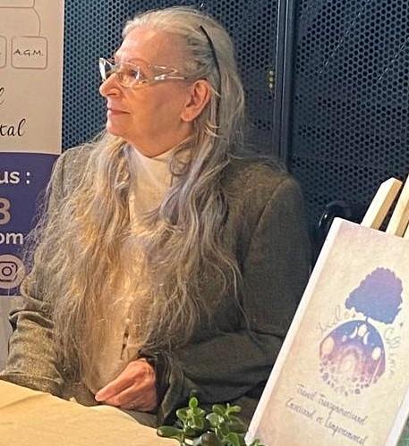

Certaines émotions, certains schémas, certaines difficultés se transmettent d'une génération à l'autre sans que vous en ayez conscience. Ce travail explore ces transmissions pour vous aider à vous en libérer.
Vous n'avez pas besoin d'avoir vécu un traumatisme grave ni de connaître toute votre histoire familiale.
Vous ressentez une anxiété, une tristesse ou un mal-être diffus dont vous n'arrivez pas à identifier clairement l'origine.
Vous reproduisez les mêmes situations dans vos relations, malgré votre volonté de faire autrement.
Vous avez l'impression de porter quelque chose qui ne vous appartient pas entièrement — une charge venue d'ailleurs.
Vous êtes parent et souhaitez comprendre ce que vous transmettez à vos enfants, pour choisir consciemment.
Vous avez fait d'autres démarches et souhaitez explorer une dimension supplémentaire de votre histoire.
Pas de protocole imposé, pas d'engagement de durée. Nous avançons selon ce qui est présent pour vous.
Nous prenons le temps de comprendre votre demande, d'explorer les grandes lignes de votre histoire familiale et de définir un axe de travail. Rien à préparer.
Nous travaillons à partir de votre Arbre Émotionnel des Générations pour identifier ce qui se transmet dans votre lignée et ce que vous en portez.
Pas de durée imposée. L'accompagnement se poursuit tant qu'il est utile et se termine quand vous le décidez — ensemble.
Séance individuelle
Ce travail m'a permis de comprendre des schémas que je reproduisais depuis des années sans en voir l'origine. Pour la première fois, j'ai eu l'impression de me voir vraiment — et de pouvoir choisir.
Je suis venue avec des doutes. Je repars avec des clés. Kristine a une façon de guider qui est à la fois douce et très précise. Ce n'est pas de la magie — c'est du travail vrai.
Témoignages anonymisés, publiés avec accord des personnes.
Je suis praticienne en Travail Transgénérationnel Émotionnel et Comportemental. J'exerce à Castelsarrasin (82), en Tarn-et-Garonne.
Ce qui m'a conduite à ce travail, c'est ma propre expérience de ce que certaines choses se transmettent dans les familles sans qu'on le choisisse — et la conviction que comprendre ces transmissions, c'est déjà se donner la possibilité de faire autrement.
En savoir plus sur Kristine
Premier rendez-vous sans engagement. À Castelsarrasin (82).
Prendre rendez-vousAnnulation remboursée si prévenue plus de 48h à l'avance